Vox V847 Wah-Wah Analysis
The V847 is a Wah-Wah pedal designed by Lester Kushner and Brad Plunkett and released in 1967 by VOX. It emulates the sound of a trumpet being muted, modifying the guitar tone like a human voice saying the syllable wah.
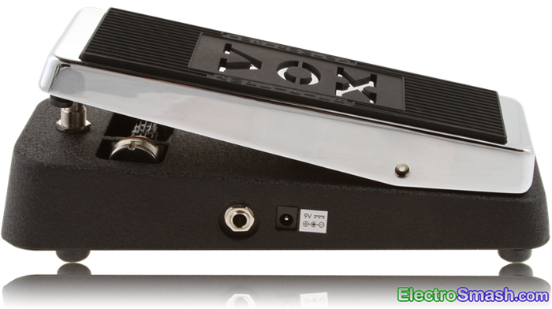
Vox produced several versions of the Wah-Wah with small circuit adjustments:
- Vox V847: It is the classic Wah-Wah model. No true bypass.
- Vox V847A: Updated version of the classic model, including SMD resistors and an additional input buffer stage.
- Vox V846HW: It is hand-wired in turret board construction and premium components.
- Vox V845: Based on the specifications of the original pedal developed by VOX in the '60s.
- Vox V848 Clyde McCoy: featuring True Bypass and AC input.
Table of Contents.
1. The Wah-Wah Effect.
2. The Vox V847 Circuit.
2.1 The Vox V847 Wah Frequency Response.
2.2 The Vox V847 Layout.
2.3 The Vox V847 Circuit Bias.
2.4 The Vox V847 Components Part List / Bill of Materials.
3. Input Stage.
3.1 Input Stage Gain.
3.2 Vox V847 Input Impedance.
4. Output Stage
4.1 Vox V847 Output impedance.
5. How the Wah-Wah works.
6. Vox V847 Wah Modifications.
6.1 Modifying the Wah-Wah Q factor.
6.2 Modifying the Sweep Range.
6.3 More Bass and Gain Modification.
6.4 More Mid Content Modification.
6.5 The V847 Wah-Wah Inductor.
7. Resources.
1. The Wah-Wah Effect.
The Wah-Wah pedal was invented in November 1966 by Lester Kushner and Brad Plunkett at Warwick Electronics, a division of Whirlpool that owned Thomas Organ Company and Vox. The creation of the Wah-Wah effect seems to be a fluke during the solid-state redesign of the Vox Super Beatle/USA Amplifier.
Vox first units were made in Italy by Jen Elettronica (OEM) and called The Clyde McCoy Wah-Wah model after the famous trumpet player whose 1931 hit Sugar Blues popularized the Wah-Wah sound. Thomas Organ then wanted the effect branded as its own for the American market, changing it to Cry Baby which was sold in parallel to the Italian Vox V846.
Warwick Electronics Inc. was granted US patent 3530224 Foot-Controlled Continuously Variable Preference Circuit for Musical Instruments on September 22, 1970.
The Wah-Wah effect is basically a tone control. The frequency response of it is a band-pass filter which boosts the resonant frequency and attenuates above and below harmonics. The action of rocketing the pedal shifts the resonant frequency. When the pedal is pushed all the way down, the high frequencies are emphasized, and conversely, when the pedal is all the way up, the bass is boosted.
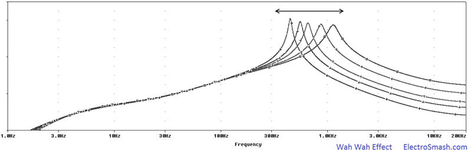
2. The Vox V847 Circuit.
The V847 simple schematic can be broken down into two blocks: Input Stage and Output Stage.
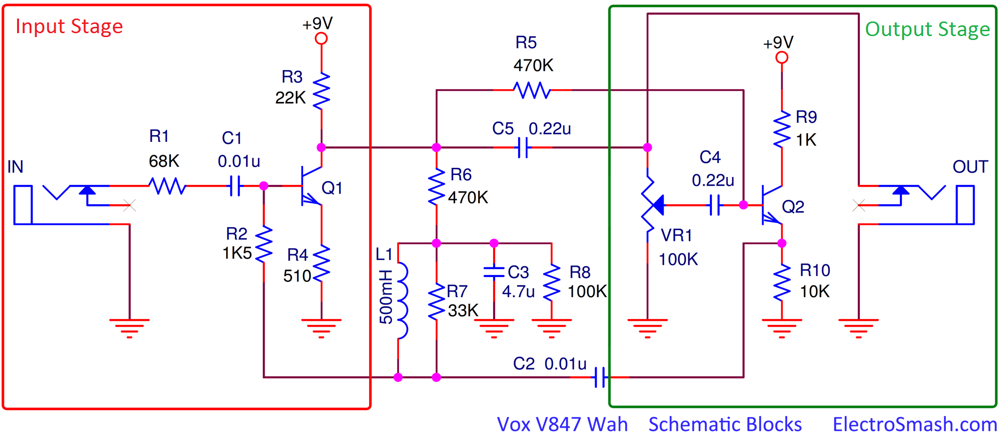
The circuit is built using 2 cascaded transistor stages with a couple of passive components and an inductor; this reduced design makes the power consumption below 1mA.
The gist of the design remains in how the resonant frequency of an LC filter made up of a fixed inductor L1 and a fixed capacitor C2 can be moved using a variable resistor VR1.
2.1 Vox V847 Wah Frequency Response.
The frequency response is characterized by a resonant peak centered in 750 Hz (pedal in a mid position) and can be swept up and down from 450 Hz to 1.6 KHz. The selected frequencies are amplified up to 18dB while the surrounding ones are attenuated as the below image shows:
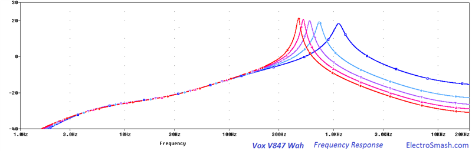
2.2 The Vox V847 Layout.
The printed circuit board is designed to fit without problems inside the big pedal enclosure.
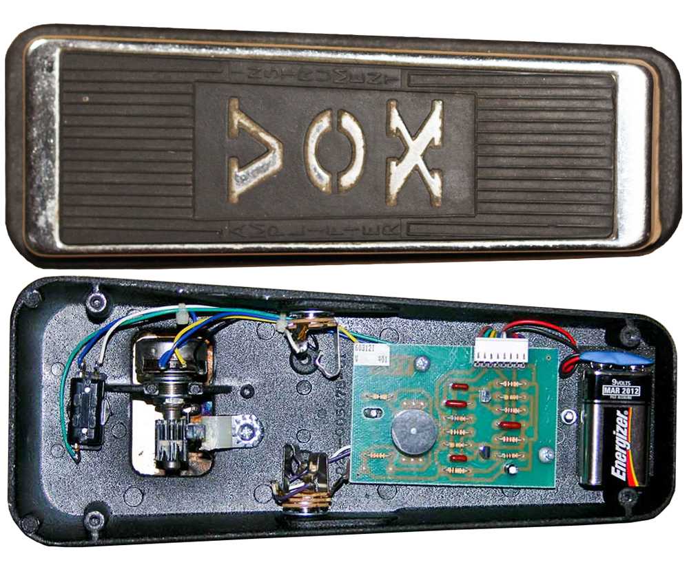
The Vox V847 uses a single layer PCB with insertion components. The side of the board contains a Molex style connector to attach the cables to be connected to the potentiometer, footswitch and jack connectors.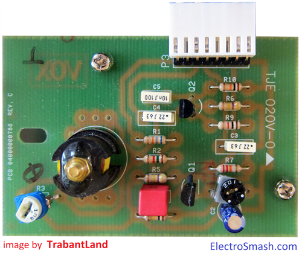
2.3 The Vox V847 Circuit Bias.
In the image below, the most important DC bias points are shown. It can be useful in order to troubleshoot and trace circuit failures:
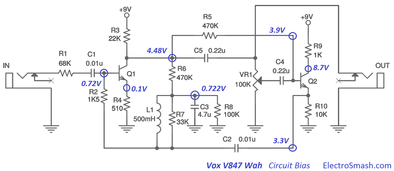
2.4 Vox V847 Components Part List / Bill of Materials.
Q1 MPSA18
Q2 MPSA18
C1 0.01uF
C2 0.01uF
C3 4.7uF
C4 0.22uF
C5 0.22uF
L1 500mH
R1 68KΩ
R2 1K5Ω
R3 22KΩ
R4 510Ω
R5 470KΩ
R6 470KΩ
R7 33KΩ
R8 100KΩ
R9 1KΩ
R10 10KΩ
VR1 100KΩ
Input/Output Jack Connector.
True Bypass Switch.
3. V847 Input Stage.
The Input Stage is a Common-Emitter Amplifier with Voltage Shunt Feedback:
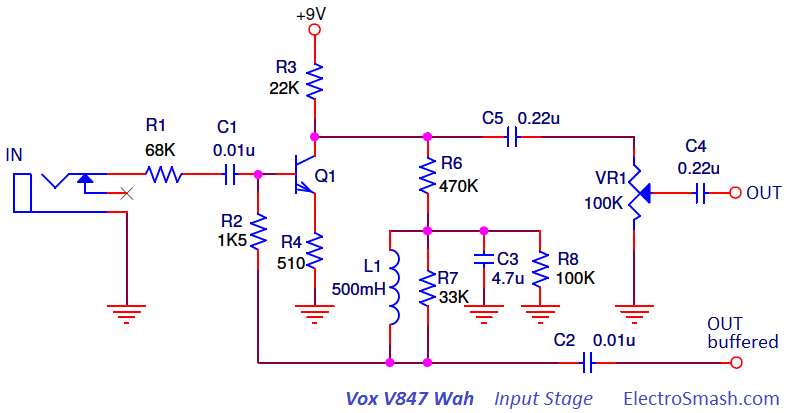
The input capacitor C1 isolates the guitar from any pedal DC potential, protecting the pickups in case of circuit failure. Resistors R8 and R6 form a voltage divider for determining the bias applied to the base of Q1 through the inductor and resistor R2.
3.1 Input Stage Gain.
In common emitter amps, the approximate voltage gain is collector resistance divided by the emitter resistance (GV = RC/RE = 22K/510 = 43 = 32dB), but the effect of the feedback network has to be taken into consideration, reducing in practice the gain to 18dB.
The feedback network from collector to base is composed by the resistance R6 470K and R8 100K to ground (The inductor in parallel with the resistor R7 33K, can be considered as a shortcut).
This feedback topology is a method to apply negative feedback to the amplifier, while it results in a reduced overall voltage gain and transistor input impedance, a number of improvements are obtained like stabilized voltage gain, improved frequency response and immunity against variations in temperature and transistors Beta.
The measures and simulations indicate that the gain of this stage is around 18dB.
The output of the BJT amp is connected to the 100K potentiometer VR1 in a voltage divider configuration, which means that with the rocketing foot action, the gain of the first stage is regulated, from 18dB to 1dB.
In order to calculate the input impedance of the V847 the hybrid-pi model is used for analyzing the small signal behavior:
Zin = R1 + (R2’ // RinCommon Emitter Amp)
Where:
- R1 = Input resistor which is 68K.
- R2'= R2 can be considered as connected to ground, as it is indeed attached to the Q2 emitter that has a very low output impedance.
- Rin of the Common Emitter Amp = rπ + (β+1)xR4 = (400+1)x510 = 204K
The parallel combination of R2 and the input resistance of the Common Emitter are much smaller than R1 due to the feedback loop and the emitter resistance R Hence, the value of the input resistor R1=68K accounts for almost the entire signal loading at the input. As a rule of thumb a good input impedance for a guitar pedal is around 1MΩ, the 68K it is indeed low input impedance and the guitar signal might suffer tone sucking (loss of high frequencies).
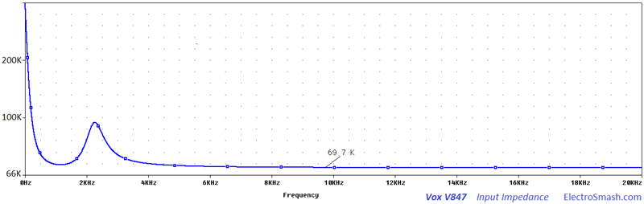
In the graph above, the input impedance is measured in 69.7KΩ, acknowledging with the calculated value of 69.5KΩ.
Increasing the 68K R1 input resistor, the input impedance is also increased but it also forms a voltage divider at the input, reducing the available voltage gain.
4. Output Stage.
The second stage is an emitter follower working as a low output impedance amplifier of approximately unity gain:
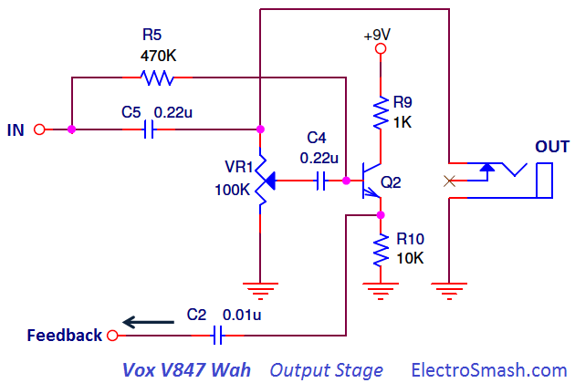
This block will buffer the signal taken from the wiper of the VR1 potentiometer.
- The bias of the base is obtained from the collector of Q1 through the resistor R5.
- Resistor R10 is a DC return for the emitter follower.
- Resistor R9 in the collector is included to suppress the tendency to oscillation.
The output jack of the pedal is taken before the variable resistor VR1 and is not affected by the position of the slider. Therefore, the position of the potentiometer does not affect the output level.
4.1 Vox V847 Output impedance.
Once again the output impedance can be estimated using the hybrid-pi model, but in this case, the formula is complex and does not give any intuitive idea. Alternatively, the value can be calculated using PSpice accurate simulation, showing the results below:
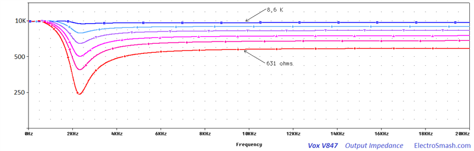
The position of the VR1 potentiometer effects the value of the output impedance, but the overall number is between 630 Ω and 8.6KΩ, which can be considered as good output impedance.
5. How the Wah-Wah works.
The core of the wah design remains in the cap C2 which close the feedback loop between the output (Q2 emitter) and the input stage of the circuit:
The Input Stage amplifies the feedbacked signal coming from the Q2 emitter through C2 and R2. Because of this amplification of the signal applied across the C2 capacitor, the apparent reactance seen by the input signal looking into the capacitor is different from the real one.
This apparent magnitude of the cap C2 reactance magnitude depends on the gain of the signal of the first stage. The gain of the first stage is determined by the position of the slider VR1:
- If the slider is set to lower position, Gain = min, Current flow through feedback cap C2 = min, Apparent reactance = max, Apparent capacitance = min.
- If the slider is set to upper position, Gain = max, Current flow through feedback cap C2 = max, Apparent reactance = min, Apparent capacitance = max.
Connecting a complementary reactance (inductor L1) will produce a resonant circuit which is adjusted by tuning the apparent capacitance of C2.
Note:
- The impedance of an element can be expressed as Z = R + jX
- In ideal resistors Z = R (impedance = resistance [Ω])
- In ideal capacitor Z = jX (impedance = reactance [Ω])
- Capacitor Reactance: It is the opposition of the Capacitor to the change of voltage through it. The built-up electric field resists the change of voltage between the capacitor pins. (reactance)XC = -1/wC(capacitance)
- Reactance is measured in Ohms, not Farads. The Farads is the measure of the capacitance, an inherited property of the capacitor element.
6. Vox V847 Wah Modifications.
There are some popular modifications that players do to their pedals, you will see how they work and how do they affect the guitar signal:
6.1 Modifying the Wah-Wah Q factor.
The Quality Factor is a parameter that characterizes a resonator's bandwidth relative to its center frequency, that is how narrow or spread is the selected frequency band.
The 33K resistor R7 is introduced to adjust this value, allowing surrounding resonant frequencies to be amplified too. In other words, R7 sets the sharpness of the resonant peak.
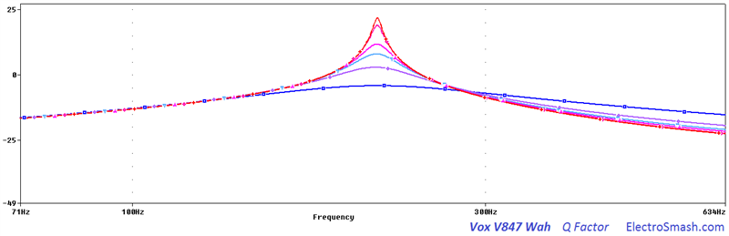
In the graph above, the effect of the R7 is shown, increasing its value, the Q factor is reduced, and the filter bell is spread. This modification is also known as “Vocal Mod”, some users replace the 33K for a bigger one like 39K, 68K or even 100K to have more vocal sounding.
6.2. Modifying the Sweep Range.
The C2 capacitor primary determines the center frequency of the wah sweep. Changing its value moves the whole wah sweep range up or down.
In the images below the shift of the sweep range can be appreciated, using 0.1uF, 0.01uF (default) and 0.001uF.
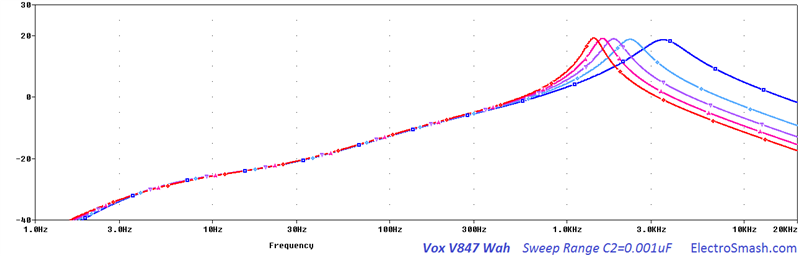
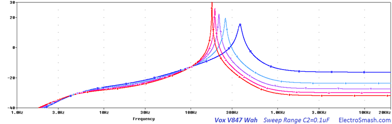
Bigger values move it down towards bass, smaller values move it up. Bass players like to increase the value (typically 0.068µF) for a better bass wah response.
6.3 More Bass and Gain Modification.
The emitter resistor R4 controls the gain level of the effected signal. Reducing its value will result in a slight addition of gain and bass content. In the figure below, it is shown how smaller R4 values modify the frequency response:
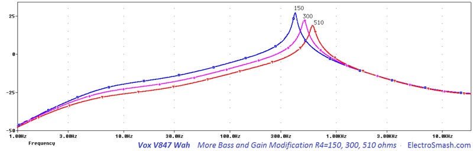
6.4 More Mid Content Modification.
This mod subtle sets the midrange content. Increasing the value of the stock R2 1K5, the heel-down position will sound slightly more strong and emphasized. Typical values for this mod are 2K and 2K7.
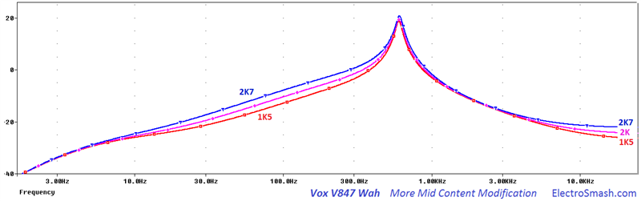
6.5 The V847 Wah-Wah Inductor.
In most classic pedals, there is some component which is often impossible/difficult to find or expensive and it is the one which, of course, gives the best sound or the legendary original tone. In this case the Fasel inductor from the first series
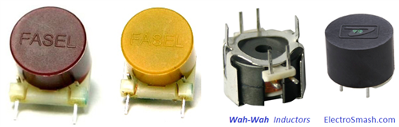
There are several options in the market: The Dunlop Yellow/Red Fasel, TDK, Sabbadius Soul Inductor, Coloursound Inductor, Wipple inductor, SOD inductors, miniature audio transformers and coils from industrial filters.
Everything with a DC resistance between 10 to 100Ω (15Ω typ.), and inductance (if you can measure it) between 200mH to 1H (500mH typ.) can be used.
7. Resources.
The Technology of Wah Pedals by Geofex.
Vox Wah Wah Patent (US3530224)
5.1 Datasheets.
V845 V846-HW V847 Owner's Manual.
Thanks for reading, all feedback is appreciated
Some Rights Reserved, you are free to copy, share, remix and use all material.
Trademarks, brand names and logos are the property of their respective owners.